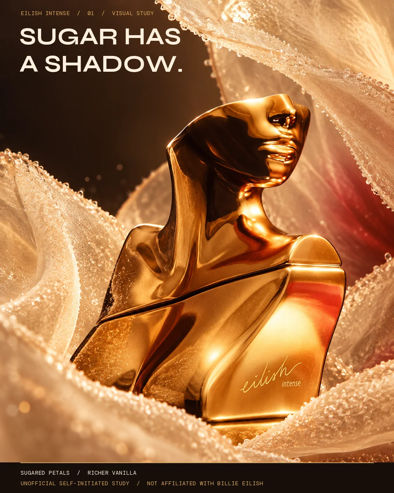
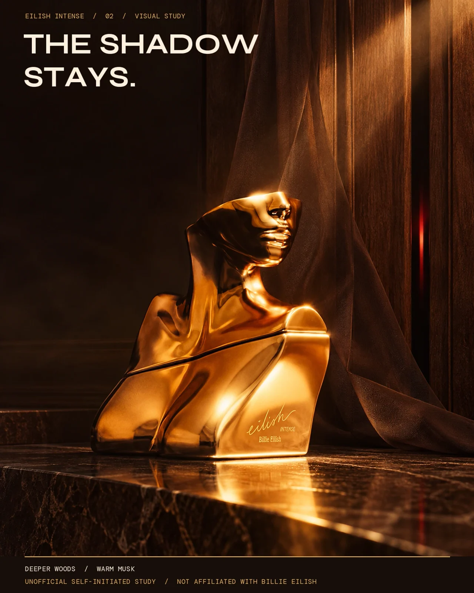

← All work
Fragrance · Unofficial brand study
SUGAR HAS A SHADOW
Petal sweetness with a deeper afterimage.

The idea
The first image places sugared petals against a darkening form; the second lets the floral signal recede so the woods and vanilla stay in view.
Making the world
The pair uses softness and shadow as one material progression. It is an independent visual concept, with generated bottle details subject to packshot review.
The series
